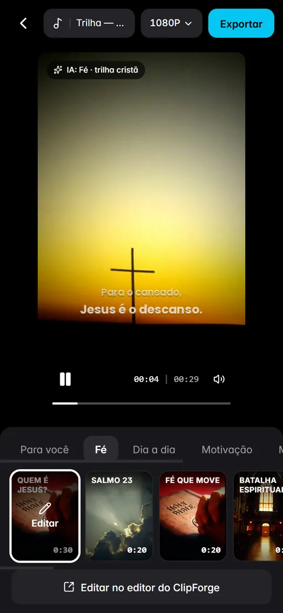
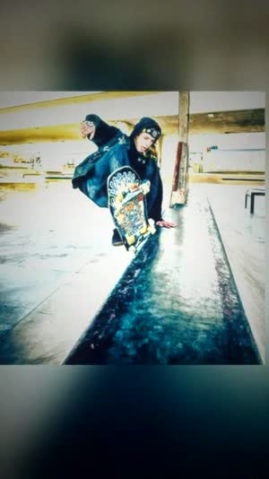

ClipForge › AutoCut
AutoCut
AutoCut para PC: suas fotos viram um vídeo pronto
O AutoCut do ClipForge faz no computador o que você já conhece do celular: você escolhe as fotos e os vídeos, e ele entrega o vídeo editado — cortes na batida, transições, zoom, efeitos, cor e texto — com uma música em alta. Depois é só trocar de modelo até gostar e exportar.

Como usar o AutoCut
- Abra o AutoCut em Todas as ferramentas, no editor do ClipForge.
- Selecione fotos e vídeos — de 3 a 15 arquivos ficam ótimos.
- Toque em Gerar vídeo. A IA lê as mídias, escolhe a categoria e o primeiro modelo, e o vídeo aparece com as suas fotos.
- Troque de modelo na barra de baixo para ver outras versões. Cada modelo usa o seu próprio ritmo, cor e música.
- Exporte em 1080p ou 720p, ou toque em Editar para ajustar tudo na linha do tempo.
120 modelos em 6 categorias
São 20 modelos em cada categoria, cada um com capa ilustrada:
- Para você — Trend do momento, Cinemático, Flash na batida, Memórias, Trailer épico, Velocity, Anime edit…
- Fé — Quem é Jesus?, Salmo 23, Batalha espiritual, Leão de Judá, Louvor, Oração, Ele vive…
- Dia a dia — Minha rotina, Vlog do dia, Fim de semana, Viagem, Café da manhã, Photo dump…
- Motivação — Foco total, Não desista, Disciplina, Mentalidade, 5 da manhã…
- Moda e beleza — Look do dia, Glam, Editorial P&B, Make do dia, Passarela…
- Esportes — Highlights, No limite, Golaço, Academia, Skate, Surf, MVP…

Uma IA que entende as suas fotos
Antes de montar o vídeo, o ClipForge reconhece o conteúdo das imagens com uma IA que roda no seu próprio computador — sem enviar suas fotos para a internet e sem custo. Fotos de igreja, cruz, oração, Bíblia ou louvor abrem a categoria Fé com trilha cristã épica; esporte, moda e beleza, dia a dia e motivação também são reconhecidos e já abrem os modelos certos.
Na batida de uma música em alta
O ClipForge encontra as batidas, os compassos e o drop da música e faz cada corte cair no tempo certo. Os efeitos seguem o ritmo: zoom com clarão, chicote diagonal, entrada em fatia, flash e câmera em movimento em cada plano. Você pode deixar a música automática, escolher outra da lista de músicas em alta ou adicionar a sua.
Perguntas frequentes
O AutoCut funciona sem internet?
A montagem do vídeo e a IA que lê as fotos rodam no seu computador. A internet só é usada para instalar, ativar e baixar o modelo de IA na primeira vez.
Quantas fotos posso usar?
Até 40 arquivos entre fotos e vídeos. De 3 a 15 costuma dar o melhor resultado.
Posso editar o vídeo depois?
Sim. Toque em Editar e o vídeo abre na linha do tempo do ClipForge, onde você ajusta textos, cortes, efeitos e keyframes.
Qual é a qualidade do vídeo?
O AutoCut exporta em 1080×1920 (Full HD vertical) ou 720p. No editor, o ClipForge exporta até 8K.